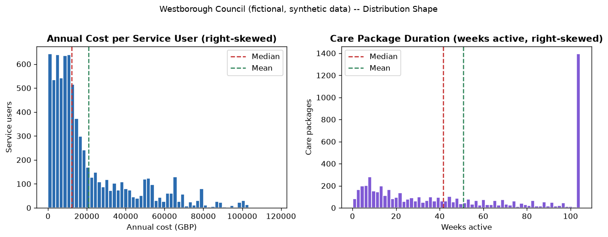
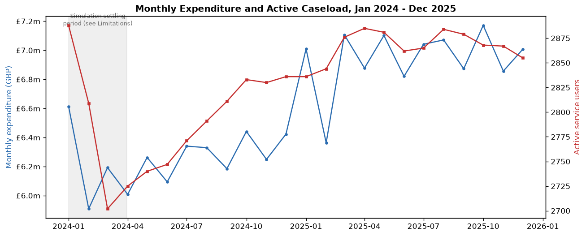

Is a fictional council's rising adult social-care bill down to more people needing care, or care itself costing more? And do the care providers and areas that look expensive still look expensive once you account for how hard their caseloads really are — without ever ranking a single person? An end-to-end analysis across Excel, SQL, Python and Power BI on two years of synthetic social-care data.
Every figure below is exactly across the Excel workbook, every SQL script and the Python notebook.
Westborough is a made-up local council, used here to practise a real analytics workflow on a sensitive, ethically-constrained dataset. Its adult social-care bill grew by 11% in a year — a real but modest amount faster than the 9.2% growth in the number of people receiving care — and the data shows that gap is the net result of six different effects pulling in different directions, not one runaway cause.
Along the way, the same analysis found two care homes whose cost position flips once you account for how hard their caseloads really are, two areas of the council that stay genuinely more expensive even after accounting for case difficulty, and a data-generation bug that briefly made spending look like it was falling by almost a third before it was caught and fixed.
In a year, total spending went up by just over a tenth, while the number of people getting care went up by under a tenth. That's a real gap between the two, but it's a modest one — not a runaway trend.
Instead of guessing at one cause, the entire increase was traced, penny by penny, into six distinct effects — from more people needing care, to how long people needed it for, to changes in care-home fees.
People who join partway through a year only receive care for part of that year, which mechanically drags the average down — even though no one's actual care package got shorter. Far more people joined newly in 2025 than in 2024, which is what's really behind this effect.
The average yearly cost per person barely moved, and a statistical check can't rule out that even this small rise is just down to chance rather than a genuine change.
Providers were only ever compared against others delivering the exact same kind of care, and adjusted for how complex their caseload was. Most rankings didn't move at all. One care home looks like the second most expensive in its category — but it also handles the hardest cases, and once that's accounted for it drops down the ranking. Another looks mid-priced — but it has an easier caseload than most, and once accounted for, becomes one of the most expensive.
Some areas cost more partly because they have harder cases and more residential care. Adjusting for that narrows the gap by around a third — but two areas still cost noticeably more than the rest even after adjusting, which is worth investigating on the ground.
Westborough Central and Northfield, the two busiest areas, also have the highest share of people assessed as having substantial or critical needs. That lines up with them costing more, though it doesn't by itself prove that's the only reason.
The very start of the two-year window shows a small, artificial dip-and-recovery pattern, a known side-effect of how the underlying data was generated rather than anything real. Removing that period and recalculating shifts the headline growth figure by only a fraction of a percentage point.
Westborough is a fictional local authority whose adult social-care spending has been rising faster than the number of people receiving services. Senior management wanted a straight answer to a wide brief: is the pressure caused by more people needing care, harder cases, more intensive care packages, longer service duration, rising provider prices, a shift between residential and home-based care, geography, or specific providers — and, critically, whether raw provider and locality cost comparisons would hold up once case difficulty was properly accounted for.
One rule was non-negotiable throughout: this analysis must never produce a “high-cost person” ranking or a simplistic provider league table. No individual service user, referral or care package is ranked, scored or singled out anywhere in this project — every comparison sits at group level (provider, locality, service type or complexity tier), and every raw comparison is presented alongside its case-mix-adjusted counterpart rather than on its own.
| Coverage | 6 localities, 32 care providers, 8 service types, 4 complexity tiers |
|---|---|
| Period | January 2024 – December 2025 (24 months) |
| Service users (synthetic population) | ~6,000 |
| Distinct users receiving care | 3,608 in 2024, 3,940 in 2025 |
| Care packages | 5,674 |
| Monthly service-delivery records | 69,149 |
| New referrals | 962 in 2024, 1,594 in 2025 |
Each tool answers a different part of the brief, but every headline number reconciles exactly across all of them.
Every part below is calculated so it sums exactly to the real £8,253,713.99 change — nothing is rounded to fit. Price and complexity-banding cannot be separated for weekly-fee services (Residential, Nursing, Respite, Reablement), so that effect is reported as a single bundled term.
Providers are only ever compared against others delivering the same service type, on a consistent rate unit. The interactive chart above (Headline Numbers) lets you switch service type. The table below names the two Residential Care outliers.
| Provider | Raw rank | Adjusted rank | Interpretation |
|---|---|---|---|
| Hollybank Manor Care Home | 2nd most expensive | 4th | Explained by a genuinely harder caseload — 87.9% Substantial/Critical needs, the highest of the five Residential Care providers compared |
| Rosewood Care Home | 4th most expensive | 3rd | A mirror pattern to Hollybank's — its comparatively easier caseload was flattering its raw position |
| Locality | Raw rank | Adjusted rank | Interpretation |
|---|---|---|---|
| Westborough Central | Most expensive | 2nd most expensive | Still relatively higher-cost after adjustment — remains worth operational investigation |
| Northfield | 2nd most expensive | Most expensive | Becomes the highest-cost locality once adjusted — complexity-tier mix alone doesn't fully explain its position |


Source files for this project are organised as shown below (not yet published to a public GitHub repository). Every deliverable reconciles to the same figures shown on this page.
See also: 08_outputs/executive_summary/ for the full written analysis and 09_case_study/portfolio_case_study.md for the source of this page.